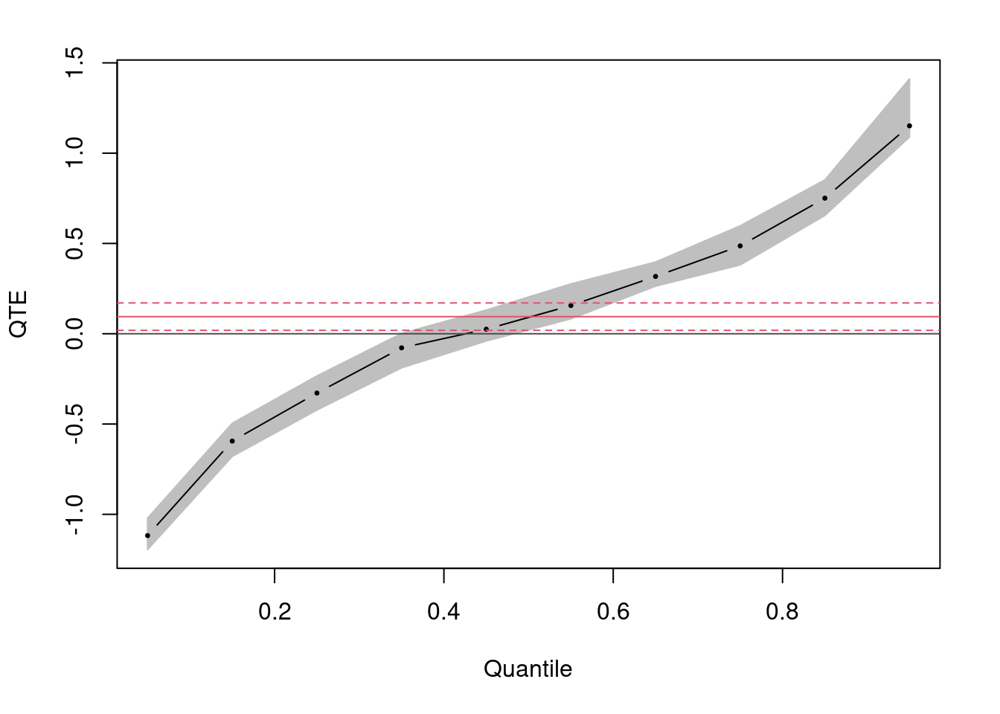

Voir ce guide1 pour une discussion plus formelle sur l’indépendance et les hypothèses nécessaires pour estimer les effets causaux. Ce guide décrit dix types distincts d’effets causaux que les chercheurs peuvent souhaiter estimer. Comme discuté dans notre guide sur l’inférence causale, la randomisation simple permet de produire des estimations de la moyenne des effets causaux au niveau de l’unité dans un échantillon. Cet effet causal moyen ou effet moyen du traitement (average treatment effect, ATE) est un concept puissant car c’est une solution à l’impossibilité d’observer tous les contrefactuels pertinents. Pourtant, ce n’est pas la seule manière efficace de faire face à ce problème. En fait, il existe de nombreux types différents de quantités d’intérêt causal. L’objectif de ce guide est de vous aider à choisir des paramètres (i.e. des paramètres d’intérêt) et des estimateurs (procédures pour calculer des estimations de ces paramètres) qui sont appropriés et significatifs pour vos données.
1 Effet moyen du traitement
Nous commençons par examiner comment, avec la randomisation, une simple différence des moyennes fournit une estimation non biaisée de l’ATE. Nous prenons plus de temps pour présenter certains concepts et notations statistiques courants utilisés tout au long de ce guide.
Tout d’abord, nous définissons un effet de traitement pour une observation individuelle (une personne, un ménage, une ville, etc.) comme la différence entre le comportement de cette unité sous le traitement \(Y_{i}(1)\) et sous le contrôle \(Y_{i}( 0)\) :
\[τ_{i}=Y_{i}(1)−Y_{i}(0)\]
Puisque nous ne pouvons observer que \(Y_{i}(1)\) ou \(Y_{i}(0)\), l’effet du traitement individuel est impossible à connaître. Soit \(D_{i}\) un indicateur pour savoir si c’est une observation sous traitement ou sous contrôle. Si le traitement est assigné de manière aléatoire, \(D_{i}\) est indépendant, non seulement des résultats potentiels mais aussi de toutes les covariables (observées et non observées) qui pourraient également prédire ces résultats \((Y_{i}(1), Y_{i }(0) et X_{i}⊥⊥D_{i})\).2
Supposons que notre conception implique \(m\) unités sous traitement et \(N−m\) sous contrôle. Supposons que nous devions réassigner à plusieurs reprises le traitement de manière aléatoire et à chaque fois calculer la différence des moyennes entre les groupes de traitement et de contrôle, puis enregistrer cette valeur dans une liste. La moyenne des valeurs de cette liste sera la même que la différence des moyennes des véritables résultats potentiels si nous avions observé tous les résultats potentiels pour toutes les observations.3 Autrement dit, l’estimateur (i.e. la différence des moyennes observées) est un estimateur sans biais de l’effet causal moyen du traitement.
L’inférence statistique sur l’ATE estimé nécessite que nous sachions comment il variera selon les randomisations. Il s’avère que nous pouvons écrire la variance de l’ATE à travers les randomisations comme suit :
et estimer cette quantité à partir des estimations de l’échantillon de la variance dans chaque groupe.5
Un modèle linéaire de régression du résultat observé \(Y_{i}\) sur un indicateur de traitement \(D_{i}\) fournit un estimateur pratique de l’ATE (et avec quelques ajustements supplémentaires, de la variance de l’ATE) :
puisque nous pouvons réarranger les termes de sorte que \(β_{0}\) représente la moyenne parmi les observations de contrôle \((Y_{i}(0)∣D_{i}=0)\) et \(β_{1}\) représente la différence des moyennes \((Y_{i}(1)∣D_{i}=1)–(Y_{i}(1)∣D_{i}=0)\). Dans le code ci-dessous, nous créons un échantillon de 1 000 observations et assignons de manière aléatoire un traitement Di avec un effet unitaire constant à la moitié des unités. Nous estimons l’ATE en utilisant la méthode des moindres carrés ordinaires (MCO) pour calculer la différence des moyennes observée. Le calcul des moyennes dans chaque groupe et la prise de leur différence produiraient également une estimation non biaisée de l’ATE. Notez que l’ATE estimé à partir de MCO n’est pas biaisé, mais les erreurs dans ce modèle linéaire sont supposées être indépendantes et distribuées de manière identique. Lorsque notre traitement affecte à la fois la valeur moyenne du résultat et la distribution des réponses, cette hypothèse ne tient plus et nous devons ajuster l’erreur type de MCO à l’aide d’un estimateur sandwich Huber-White pour obtenir les estimations correctes (basées sur la variance de l’ATE) pour l’inférence statistique.6 Enfin, nous démontrons également l’absence de biais de ces estimateurs par simulation.
set.seed(1234) # pour la reproductibilitéN =1000# taille de la populationY0 =runif(N) # Résultat potentiel sous la condition de contrôleY1 = Y0 +1# Résultat potentiel sous condition de traitementD =sample((1:N)%%2) # Traitement: 1 si traité, 0 sinonY = D*Y1 + (1-D)*Y0 # Résultat dans la populationsamp =data.frame(D,Y) ATE =coef(lm(Y~D,data=samp))[2] # idem avec (samp,mean(Y[Z==1])-mean(Y[Z==0]))# SATE avec Neyman ou avec une erreur type justifiée par randomisation# qui sont les mêmes que les erreurs types MCO en l'absence de covariables ou de découpage par bloclibrary(lmtest) library(sandwich) fit<-lm(Y~D,data=samp) coef(summary(fit))["D",1:2]
Estimate Std. Error
1.01820525 0.01841784
ATE.se<-coeftest(fit,vcovHC(fit,type="HC2"))["D",2] # idem avec (samp,sqrt(var(Y[D==1])/sum(D)+var(Y[D==0])/(n-sum(D)))# Évaluer le biais et simuler l'erreur typegetATE<-function() { D =sample((1:N)%%2) # Traitement: 1 si traité, 0 sinon Y = D*Y1 + (1-D)*Y0 coef(lm(Y~D))[["D"]] } manyATEs<-replicate(10000,getATE()) ## Évaluer le biais:c(ATE=mean(Y1)-mean(Y0), ExpEstATE=mean(manyATEs))
ATE ExpEstATE
1.0000000 0.9999077
## Erreur type### en utilisant la formule classiqueV<-var(cbind(Y0,Y1)) varc<-V[1,1] vart<-V[2,2] covtc<-V[1,2] n<-sum(D) m<-N-n varestATE<-((N-n)/(N-1))*(vart/n) + ((N-m)/(N-1))* (varc/m) + (2/(N-1)) * covtc ### Comparer les erreurs typesc(SimulatedSE=sd(manyATEs), TrueSE=sqrt(varestATE), ConservativeSE=ATE.se)
Le problème de ne considérer que l’effet moyen du traitement est que cela détourne l’attention du fait que l’effet du traitement peut être très différent pour différents types de personnes. Alors que le “problème fondamental de l’inférence causale” suggère que la mesure des effets causaux pour des unités individuelles est impossible, faire des inférences sur des groupes d’unités ne l’est pas.
L’assignation aléatoire garantit que le traitement est indépendant des résultats potentiels et de toute covariable (observée et non observée). Parfois, cependant, nous avons des informations supplémentaires sur les unités expérimentales telles qu’elles existaient avant que l’expérience ne soit menée, disons \(X_{i}\), et ces informations peuvent nous aider à comprendre comment les effets du traitement varient entre les sous-groupes. Par exemple, nous pouvons suspecter que les hommes et les femmes réagissent différemment au traitement, et nous pouvons tester cette hétérogénéité en estimant l’ATE conditionnel pour chaque sous-groupe séparément \(CATE=E(Y_{i}(1)−Y_{i}(0 )∣D_{i},X_{i})\). Si notre covariable est continue, nous pouvons tester ses effets modérateurs en faisant varier la variable continue avec le traitement. Notez, cependant, que l’effet du traitement est désormais conditionné à la fois au statut du traitement et à la valeur de la variable de conditionnement pour laquelle l’effet est évalué, nous devons donc ajuster notre interprétation et l’erreur type en conséquence.7
Avertissement : examiner l’effet du traitement à travers des dimensions qui sont elles-mêmes influencées par le traitement est une entreprise dangereuse et peut conduire à des inférences incorrectes. Par exemple, si vous vouliez voir comment l’administration d’un médicament conduit à des améliorations de la santé, vous pouvez rechercher séparément les hommes et les femmes, mais vous ne pouvez pas rechercher séparément ceux qui ont effectivement pris le médicament et ceux qui ne l’ont pas fait (ceci est un exemple d’inférence pour conformistes qui nécessite des techniques distinctes décrites au point 4 ci-dessous).
3 Effet d’intention de traiter (intent to treat effect, ITT)
En dehors de l’environnement contrôlé d’un laboratoire, les sujets que nous assignons au traitement ne sont souvent pas les mêmes que les sujets qui reçoivent réellement le traitement. Lorsque certains sujets assignés au traitement ne le reçoivent pas, nous appelons cela une expérience de non-conformité unilatérale. Lorsqu’en plus, certains sujets assignés au contrôle reçoivent également le traitement, on dit qu’il y a non-conformité bilatérale. Par exemple, dans une expérience de vote, certaines personnes désignées pour recevoir un courrier peuvent ne pas le recevoir. Peut-être ont-ils changé d’adresse ou ne consultent-ils jamais leur courrier. De même, certaines observations assignées au contrôle peuvent recevoir le traitement. Peut-être qu’ils viennent d’emménager et que le courrier du locataire précédent arrive toujours.
En cas de non-conformité, la réception du traitement n’est plus indépendante des résultats potentiels et des facteurs de confusion. Les personnes qui relèvent réellement leur courrier diffèrent probablement à plusieurs égards de celles qui jettent leur courrier (ou lisent le courrier de leurs voisins) et ces différences affectent probablement également leur probabilité de voter. La différence des moyennes entre les sujets assignés au traitement et au contrôle n’estime plus l’ATE, mais estime à la place ce qu’on appelle l’effet d’intention de traiter (ITT). Nous interprétons souvent l’ITT comme l’effet de donner à quelqu’un la possibilité de recevoir un traitement. L’ITT est donc particulièrement pertinent pour évaluer les programmes et les interventions à participation volontaire.
Dans le code ci-dessous, nous créons des données simples avec une non-conformité unilatérale. Bien que le véritable effet du traitement pour les personnes qui ont effectivement reçu le traitement soit de 2, notre ITT estimé est plus petit (environ 1) car seules certaines des personnes assignées au traitement le reçoivent réellement.
set.seed(1234) # pour la reproductibilitén =1000# taille de la populationY0 =runif(n) # Résultat potentiel sous la condition de contrôleC =sample((1:n)%%2) # L'unité se conforme ou non au traitementY1 = Y0 +1+C # Résultat potentiel sous condition de traitementZ =sample((1:n)%%2) # Assignation du traitementD = Z*C # Adoption du traitementY = D*Y1 + (1-D)*Y0 # Résultat dans la populationsamp =data.frame(Z,Y)ITT<-coef(lm(Y~Z,data=samp))[2]
4 Effet causal moyen pour ceux qui se conforment au traitement (complier average causal effect, CACE)
Que se passe-t-il si vous souhaitez déterminer l’effet du traitement sur les personnes qui ont effectivement suivi le traitement et pas seulement sur celles à qui le traitement a été administré ? Par exemple, quel est l’effet des publicités à la radio sur le comportement de vote des personnes qui entendent réellement les publicités ?
Cela s’avère être un problème difficile (pour en savoir plus à ce sujet, consultez ce guide). Les raisons de non-conformité au traitement peuvent être considérées comme une variable omise. Alors que la réception du traitement n’est plus indépendante des résultats potentiels, l’assignation du statut de traitement l’est. Tant que l’assignation aléatoire a eu un effet positif sur la probabilité de recevoir un traitement, nous pouvons l’utiliser comme instrument pour identifier l’effet du traitement sur la sous-population de sujets qui se conforment à l’assignation du traitement.
Suivant la notation d’Angrist et Pischke,8 soit \(Z\) un indicateur pour savoir si une observation a été assignée au traitement et \(D_{i}\) indique si ce sujet a effectivement reçu le traitement. Les expériences avec non-conformité sont composées de “toujours preneurs” (\(D_{i}=1\), indépendamment de \(Z_{i}\)), de “jamais-preneurs” (\(D_{i}=0\) indépendamment de \(Z_{i}\)), et de conformistes (\(D_{i}=1\) lorsque \(Z_{i}=1\) et \(0\) lorsque \(Z_{i}=0\)).9 Nous pouvons estimer l’effet causal moyen pour les conformistes (CACE), parfois aussi appelé effet moyen local du traitement (local average treatment effect, LATE), en pondérant l’ITT (l’effet de \(Z\) sur \(Y\)) par l’efficacité de l’assignation aléatoire sur la prise de traitement (l’effet de \(Z\) sur \(D\)).
\[CACE= \frac{Effet de Z sur Y}{Effet de Z sur D}=\frac{E(Y_i|Z_i=1)-E(Y_i|Z_i=0)}{E(D_i|Z_i=1)-E(D_i|Z_i=0)}\]
L’estimateur ci-dessus met en évidence le fait que l’ITT et le CACE convergent à mesure que nous approchons d’une conformité totale. Calculer l’erreur type pour les ratios est quelque peu fastidieux et nous estimons donc généralement un CACE en utilisant une régression des moindres carrés en deux étapes avec assignation aléatoire, \(Z_i\), servant d’instrument pour la réception du traitement \(D_i\) dans la première étape du modèle. Cette approche simplifie l’estimation de l’erreur type et permet l’inclusion de covariables en tant qu’instruments supplémentaires. Dans le code ci-dessous, nous présentons les deux stratégies pour les données présentant une non-conformité bilatérale. Notez, cependant, que lorsque les instruments ne sont pas puissants (par exemple, l’assignation aléatoire n’a eu qu’un faible effet sur la réception du traitement), les estimateurs des variables instrumentales et leurs erreurs types peuvent être biaisés et incohérents.10
set.seed(1234) # pour la reproductibilitén =1000# taille de la populationY0 =runif(n) # Résultat potentiel sous la condition de contrôleY1 = Y0 +1# Résultat potentiel sous condition de traitementZ =sample((1:n)%%2) # Assignation du traitementpD<-pnorm(-1+rnorm(n,mean=2*Z)) # Non-conformitéD<-rbinom(n,1,pD) # Réception du traitement avec non-conformitéY = D*Y1 + (1-D)*Y0 # Résultat dans la populationsamp =data.frame(Z,D,Y) # IV estimate library(AER) CACE = coef(ivreg(Y ~ D | Z, data = samp))[2] # Wald Estimator ITT<-coef(lm(Y~Z,data=samp))[2] ITT.D<-coef(lm(D~Z,data=samp))[2] CACE.wald<-ITT/ITT.D
5 Effet moyen du traitement d’une population ou d’un échantillon
Souvent, à partir de notre échantillon, nous voulons en tirer des généralisations pour une population d’intérêt plus large.11 Soit \(S_i\) un indicateur pour savoir si un sujet fait partie de notre échantillon. L’effet moyen du traitement pour l’échantillon (sample average treatment effect, SATE) est défini simplement comme \(E(Y_i(1)−Y_i(0)|S_i=1)\) et la population \(E(Y_i(1)−Y_i(0))\). Avec un grand échantillon aléatoire d’une population bien définie et une conformité totale au traitement, nos SATE et PATE sont égaux en espérance et donc une bonne estimation de l’un (comme une différence des moyennes d’échantillon) sera une bonne estimation de l’autre.12
Dans la pratique, l’échantillon expérimental peut consister en un groupe d’unités sélectionnées de manière inconnue à partir d’une population vaguement définie de ces unités et la conformité à l’assignation du traitement peut être moins que complète. Dans de tels cas, notre SATE peut diverger du PATE et la récupération des estimations de chacun devient plus compliquée. Imai, King et Stuart (2008) décomposent la divergence entre ces estimations en erreurs résultant de la sélection de l’échantillon et du déséquilibre de traitement. L’erreur de sélection de l’échantillon provient de différentes distributions de covariables (observées et non observées) dans notre échantillon et notre population. Par exemple, les personnes participant à un essai médical diffèrent souvent de la population pour laquelle le médicament sera disponible. L’erreur due au déséquilibre de traitement reflète les différences de covariables entre les groupes de traitement et de contrôle dans notre échantillon, peut-être en raison d’une assignation non aléatoire et/ou d’une non-conformité.
Bien qu’il n’y ait pas de solutions simples aux problèmes créés par de telles erreurs, vous pouvez prendre des mesures à la fois dans la conception de votre étude et dans l’analyse de vos données pour relever ces défis liés à l’estimation du PATE ou du CACE/LATE. Par exemple, l’inclusion d’une intervention placebo fournit des informations supplémentaires sur la probabilité de recevoir un traitement, qui peuvent être utilisées pour repondérer l’effet de le recevoir réellement en présence de non-conformité (voir par exemple Nickerson (2008)). On pourrait également utiliser un modèle pour repondérer les observations afin d’ajuster le déséquilibre des covariables et la probabilité inégale de recevoir le traitement, à la fois au sein de l’échantillon et entre un échantillon et la population d’intérêt.13
Dans le code ci-dessous, nous présentons plusieurs approches pour estimer ces effets mis en œuvre dans le package CausalGAM de R.14 Plus précisément, le package produit des estimateurs de l’ATE par régression, par pondération inverse du score de propension (inverse-propensity weighting, IPW) et par pondération IPW augmentée (augmented IPW, AIPW). En combinant l’ajustement de régression avec l’IPW, l’AIPW a la particularité d’être “doublement robuste” : l’estimation est toujours cohérente même si nous avons incorrectement spécifié le modèle de régression ou le score de propension pour la pondération de probabilité.
# Exemple adapté de ?estimate.ATElibrary(CausalGAM) set.seed(1234) # pour la reproductibilitén =1000# taille de la populationX1 =rnorm(n) # covariables de pré-traitementX2 =rnorm(n) p =pnorm(-0.5+0.75*X2) # Probabilité de traitement inégaleD =rbinom(n, 1, p) # traitementY0 =rnorm(n) # Résultats potentielsY1 = Y0 +1+ X1 + X2 Y = D*Y1 + (1-D)*Y0 # Résultats observéssamp =data.frame(X1,X2,D,Y) # Estimer l'ATE avec l'AIPW, l'IPW ou une régression pondéréeATE.out <-estimate.ATE(pscore.formula = D ~ X1 +X2, pscore.family = binomial, outcome.formula.t = Y ~ X1 +X2, outcome.formula.c = Y ~ X1 +X2, outcome.family = gaussian, treatment.var ="D", data=samp, divby0.action="t", divby0.tol=0.001, var.gam.plot=FALSE, nboot=50)
6 Effet moyen du traitement sur les traités et le contrôle
Pour évaluer les implications politiques d’une intervention particulière, nous avons souvent besoin de connaître l’effet du traitement non seulement sur l’ensemble de la population mais spécifiquement pour ceux à qui le traitement est administré. Nous définissons l’effet moyen du traitement pour les traitées (ATT) et le contrôle (ATC) comme de simples comparaisons contrefactuelles :
Simplement, l’ATT est l’effet pour ceux que nous avons traités ; l’ATC est ce que l’effet serait pour ceux que nous n’avons pas traités.
Lorsque le traitement est assigné de manière aléatoire et que la conformité est totale, \(ATE=ATT=ATC\), puisque \(E(Y_i(0)∣D_i=1)=E(Y_i(0)∣D_i=0)\) et \(E( Y_i(1)∣D_i=0)=E(Y_i(1)∣D_i=1)\). Souvent, en raison de la nature de l’intervention ou de préoccupations ethniques ou spécifiques au coût, la conformité du traitement est incomplète et l’ATE ne sera pas en général égal à l’ATT ou l’ATC. Dans de tels cas, nous avons vu dans la section précédente que nous pouvions repondérer les observations par leur probabilité de recevoir le traitement pour récupérer les estimations de l’ATE. La même logique peut être étendue pour produire des estimations de l’ATT et de l’ATC dans notre échantillon et dans la population.15
Ci-dessous, nous créons une étude de cas où la probabilité de recevoir un traitement varie mais peut être estimée à l’aide d’un modèle de score de propension.16 Les probabilités prédites à partir de ce modèle sont ensuite utilisées comme pondérations pour récupérer les estimations de l’ATE, de l’ATT et de l’ATC. Une pondération inverse du score de propension tente d’équilibrer la distribution des covariables entre les groupes de traitement et de contrôle lors de l’estimation de l’ATE. Pour l’ATT, cette approche de pondération traite les sujets du groupe traité comme un échantillon de la population cible (personnes ayant reçu le traitement) et pondère les sujets du groupe de contrôle en fonction de leur probabilité de recevoir le traitement. De la même manière, l’estimation de l’ATC pondère les observations pour les traités pour qu’elles ressemblent au contrôle. La qualité (l’absence de biais) de ces estimations est intrinsèquement liée à la qualité de nos modèles pour prédire la réception du traitement. La pondération inverse du score de propension et d’autres procédures produisent un équilibre entre les groupes de traitement et de contrôle sur les covariables observées. Mais à moins d’avoir le “vrai modèle” (et nous ne connaissons presque jamais le vrai modèle), le potentiel biais des covariables non observées demeure et devrait nous conduire à interpréter notre ATT ou ATC estimé à la lumière de la qualité du modèle qui l’a produit.
set.seed(1234) # pour la reproductibilitén =1000# taille de la populationX1 =rnorm(n) # covariables de pré-traitementX2 =rnorm(n) p =pnorm(-0.5+0.75*X2) # probabilité de traitement inégaleD =rbinom(n, 1, p) # traitementY0 =rnorm(n) # résultats potentielsY1 = Y0 +1+X1 +X2 Y = D*Y1 + (1-D)*Y0 # résultats observéssamp =data.frame(X1,X2,D,Y) # modèle du score de propensionsamp$p.score<-predict(glm(D~X1+X2,samp,family=binomial),type="response") # pondération inverse du score de propensionsamp$W.ipw<-with(samp, ifelse(D==1,1/p.score,1/(1-p.score))) samp$W.att<-with(samp, ifelse(D==1,1,p.score/(1-p.score))) samp$W.atc<-with(samp, ifelse(D==1,(1-p.score)/p.score,1)) # IPW: ATE, ATT, ATC ATE.ipw<-coef(lm(Y~D,data=samp,weights=W.ipw))[2]ATT.ipw<-coef(lm(Y~D,data=samp,weights=W.att))[2] ATC.ipw<-coef(lm(Y~D,data=samp,weights=W.atc))[2]
7 Effet moyen du traitement par quantile
L’ATE se concentre sur le milieu, en quelque sorte sur l’effet pour une personne typique, mais nous nous soucions souvent aussi des conséquences distributives de notre traitement. Nous voulons savoir non seulement si notre traitement a augmenté le revenu moyen, mais aussi s’il a rendu la distribution des revenus dans l’étude plus ou moins égale.
Les affirmations concernant les distributions sont difficiles. Même si nous pouvons estimer l’ATE à partir d’une différence des moyennes d’échantillon, en général, nous ne pouvons pas faire de déclarations sur la distribution conjointe des résultats potentiels \(F(Yi(1),Yi(0))\) sans hypothèse supplémentaire. En règle générale, ces hypothèses limitent notre analyse à une sous-population spécifique17 ou nous obligent à supposer une certaine forme d’invariance de rang dans la distribution des réponses à l’effet du traitement18. Voir Frölich et Melly (2010) pour une discussion assez concise sur ces questions. Voir Abbring et Heckman (Abbring, Jaap H et James J Heckman. 2007. “Econometric Evaluation of Social Programs, Part III : Distributional Treatment Effects, Dynamic Treatment Effects, Dynamic Discrete Choice, and General Equilibrium Policy Evaluation”. Handbook of Econometrics 6. Elsevier: 5145-5303.) pour un aperçu complet.
Si ces hypothèses sont justifiées pour nos données, nous pouvons obtenir des estimations cohérentes de l’effet du traitement par quantile (quantile treatment effect, QTE) en utilisant la régression par quantile.19 Tout comme la régression linéaire estime l’ATE comme une différence des moyennes (ou, lorsque des covariables sont utilisées dans le modèle, à partir d’une moyenne conditionnelle), la régression par quantile ajuste un modèle linéaire à un quantile conditionnel et ce modèle peut ensuite être utilisé pour estimer l’effet du traitement pour ce quantile particulier du résultat. L’approche peut être étendue pour inclure des covariables et des instruments de non-conformité. Notez que l’interprétation du QTE est pour un quantile donné, non pas pour un individu de ce quantile.
Ci-dessous, nous montrons un cas où l’ATE est de 0, mais l’effet du traitement est négatif pour les faibles quantiles du résultat et positif pour les quantiles élevés. L’estimation de l’effet du traitement par quantile fournit un autre outil pour détecter les effets hétérogènes et nous permet de décrire les conséquences distributionnelles de notre intervention. Ces informations supplémentaires nécessitent des hypothèses statistiques plus strictes pour nos données et des interprétations plus nuancées de nos résultats.
set.seed(1234) # pour la reproductibilitén =1000# taille de la populationY0 =runif(n) # Résultat potentiel sous la condition de contrôleY1= Y0 Y1[Y0 <.5] = Y0[Y0 <.5]-rnorm(length(Y0[Y0 <.5])) Y1[Y0 >.5] = Y0[Y0 >.5]+rnorm(length(Y0[Y0 >.5])) D =sample((1:n)%%2) # Traitement: 1 si traité, 0 sinonY = D*Y1 + (1-D)*Y0 # Résultat dans la populationsamp =data.frame(D,Y) library(quantreg) ATE =coef(lm(Y~D,data=samp))[2] QTE =rq(Y~D,tau =seq(.05,.95,length.out=10),data=samp,method ="fn") plot(summary(QTE),parm=2,main="",ylab="QTE",xlab="Quantile",mar =c(5.1, 4.1, 2.1, 2.1))

8 Effet de médiation
Parfois, nous voulons décrire non seulement l’ampleur et le niveau de signification d’un effet causal observé, mais aussi le mécanisme (ou les mécanismes) qui l’ont produit. Notre intervention a-t-elle augmenté la participation dans le groupe de traitement, en partie, en augmentant le sentiment d’utilité politique pour ces sujets ? Si oui, quelle part de cet effet total peut être attribuée aux effets de médiation de notre traitement sur le sentiment d’utilité ; et de ce sentiment d’utilité sur la participation au vote ?
Baron et Kenny (1986) proposent un cadre général de réflexion sur la médiation en décomposant l’effet total du traitement en son effet indirect sur un médiateur qui affecte ensuite le résultat, appelé effet causal moyen de médiation (average causal mediation effect, ACME), et l’effet moyen direct du traitement (average direct effect, ADE). L’estimation non biaisée de ces effets, cependant, nécessite un ensemble d’hypothèses fortes sur la relation entre le traitement, les médiateurs, les résultats et les facteurs de confusion potentiels, collectivement appelés ignorabilité séquentielle (Imai, Keele et Yamamoto (2010), Bullock, Green et Ha (2010 )).20
La plupart des effets causaux opèrent probablement à travers plusieurs canaux, et donc une hypothèse d’ignorabilité séquentielle pour votre expérience peut être difficile à justifier. Par exemple, la ligne du haut de la figure ci-dessous illustre des situations dans lesquelles l’ignorabilité séquentielle est valable, tandis que la ligne du bas décrit deux cas (parmi de nombreux possibles) dans lesquels l’ignorabilité séquentielle est violée et l’analyse de médiation est biaisée. En essence, la spécification des effets d’un médiateur particulier nécessite des hypothèses fortes sur le rôle de tous les autres médiateurs dans la chaîne causale. Alors que certains modèles expérimentaux peuvent, en théorie, fournir un effet de levier supplémentaire (comme l’exécution d’une deuxième expérience parallèle dans laquelle le médiateur est également manipulé), en pratique, ces modèles sont difficiles à mettre en œuvre et restent sensibles aux biais non observés. Dans certains cas, les informations que nous espérons tirer de l’analyse de médiation peuvent être plus facilement acquises à partir d’analyses de sous-groupes et d’expériences conçues pour tester la modération.
Imai et ses collègues proposent une approche de l’analyse de médiation qui permet aux chercheurs de tester la sensibilité de leurs estimations aux violations de l’ignorabilité séquentielle.21 Dans le code, nous montrons certaines des caractéristiques de leur approche, implémentée dans le package “mediation” en R (Tingley et al. 2014). Nous modélisons les relations avec MCO, mais le package est capable de gérer d’autres processus de résultats, tels que des modèles linéaires généralisés ou des modèles additifs généralisés, qui peuvent être plus appropriés pour vos données. Plus important encore, le package nous permet de produire les bornes qui reflètent la sensibilité de nos estimations ponctuelles à certaines violations de l’ignorabilité séquentielle. Dans nos données simulées, un peu plus de 20 % de l’effet total est médié par notre médiateur proposé, M et le biais d’un facteur de confusion pré-traitement non observé devrait être assez important (ρ = 0,7) avant que nous rejetions la conclusion d’un ACME positif. Ces limites ne sont toutefois valables que si nous pensons qu’il n’y a pas de facteurs de confusion post-traitement non observés (comme dans le panneau 4). L’analyse de sensibilité est toujours possible, mais plus compliquée dans de tels contextes (Imai et Yamamoto 2013).
set.seed(1234) # pour la reproductibilitén =1000# taille de la populationY0 =runif(n) # Résultat potentiel sous la condition de contrôleD =sample((1:n)%%2) # Traitement: 1 si traité, 0 sinonX<-rnorm(n) # CovariableM<-rnorm(n=n,mean=D+rnorm(n)) # Médiateur impacté par le traitementY1 = Y0 +1+ M # Résultat potentiel sous condition de traitementY = D*Y1 + (1-D)*Y0 # Résultat dans la populationsamp<-data.frame(D,M,Y) library(mediation) med.f<-lm(M~D+X,data=samp) # Modèle pour le médiateurout.f<-lm(Y~M+D+X,data=samp) # Modèle pour le résultat# Estimer ACME et ADElibrary(mediation) med.out<-mediate(med.f,out.f,treat="D",mediator="M",robustSE=T,sims=1000) # Sensibilité de l'ACME à un facteur de confusion pré-traitement non observés.out<-medsens(med.out) plot(s.out) # Tracer les bornes de la sensibilité
L’effet moyen du traitement semble un peu difficile à interpréter lorsque les résultats ne sont pas continus. Par exemple, un résultat binaire très courant dans l’étude des élections est codé comme 1 lorsque les sujets ont voté et 0 lorsqu’ils ne l’ont pas fait. L’effet moyen peut être de 0,2, mais qu’est-ce que cela signifie vraiment de dire qu’un traitement a augmenté mon vote de 0,2 ? L’estimation des effets causaux des résultats dichotomiques nécessite des précautions supplémentaires, en particulier lors de l’inclusion de covariables. Une quantité commune d’intérêt causal pour les résultats dichotomiques est l’effet du traitement sur les log-odds de succès, défini pour l’échantillon expérimental comme :
Freedman (2008b) montre que l’ajustement de covariables dans une régression logistique dans les expériences randomisées produit des estimations biaisées de cet effet causal. L’intuition de base de l’argument de Freedman vient du fait que prendre le log des moyennes n’est pas la même chose que prendre la moyenne des logs et donc le coefficient de traitement estimé à partir d’une régression logistique conditionnée aux covariables ne fournira pas un estimateur cohérent des log-odds de succès. Au lieu de cela, Freedman recommande de prendre les probabilités prédites de variation du statut de traitement des sujets, mais de maintenir leurs profils de covariables observés pour produire un estimateur cohérent des log-odds.
La procédure de base est décrite dans le code ci-dessous. Les coefficients de la régression logistique contrôlant la covariable X ont tendance à surestimer l’effet du traitement sur les log odds, tandis que les estimations ajustées à partir des probabilités prédites produisent des résultats cohérents.
set.seed(1234) # pour la reproductibilitén =1000# taille de la populationU =runif(n) X =runif(n) # Covariable observéeY0 =ifelse(U>.5,1,0) # Résultats potentielsY1 =ifelse(U+X>.75,1,0) D =rbinom(n,1,.75) # Assignation aléatoire des 3/4 au traitementY = D*Y1+Y0*(1-D) samp =data.frame(X,D,Y) aT<-with(samp, mean(Y[D==1])) aC<-with(samp, mean(Y[D==0])) # log odds sans conditionslog.odds<-log(aT/(1-aT))-log(aC/(1-aC)) # La régression logistique conditionnée sur X surestime les log oddsfit<-glm(Y~D+X,data=samp,binomial("logit")) log.odds.logit<-coef(glm(Y~D+X,data=samp,binomial("logit")))[2] # Dataframes utilisant les covariables initiales pour les probabilités préditesD1<-data.frame(D=1,samp[,c("X")]) D0<-data.frame(D=0,samp[,c("X")]) # Les log-odds ajustés produisent un estimateur consistent des log-cotesaT.adj<-predict(fit,newdata=D1,type="response") aC.adj<-predict(fit,newdata=D0,type="response") log.odds.adj<-log(mean(aT.adj)/(1-mean(aT.adj)))-log(mean(aC.adj)/(1-mean(aC.adj)))
10 Effet attribuable
Nous concluons par une brève discussion sur une autre quantité d’intérêt causal qui peut être particulièrement utile avec des résultats binaires : l’effet attribuable (Rosenbaum 2010). Considérons un cas simple avec un résultat dichotomique et un traitement. Soit \(A\) le nombre de résultats attribuables au traitement, c’est-à-dire le nombre de cas pour lesquels \(Y_i\) était égal à 1 parmi les sujets traités ; ce qui ne se serait pas produit si ces unités avaient été assignées au contrôle. Pour une plage de \(A\), nous ajustons le tableau de contingence observée des résultats parmi les traités et comparons cette distribution résultante à une distribution nulle connue (la distribution des résultats que nous aurions observée si le traitement n’avait eu aucun effet). La plage résultante de \(A\) pour laquelle notre test continue de rejeter l’hypothèse nulle d’absence d’effet fournit une plage des effets qui sont attribuables à notre traitement.
Table 1
\(D=1\)
\(D=0\)
\(Y=1\)
\(\sum Y_iD_i-A\)
\((1-Y_i)(D_i)\)
\(Y=0\)
\(\sum Y_i(1-D_i)+A\)
\(\sum (1-Y_i)(1-D_i)\)
Rosenbaum (2002) étend ce concept à différents types de résultats (tels que les variables continues). Une logique similaire peut également être appliquée pour détecter des réponses inhabituelles mais importantes au traitement (Rosenbaum et Silber 2008).
Hansen et Bowers (2009) utilisent cette approche pour identifier le nombre de votes supplémentaires attribuables à différentes interventions incitant au vote avec une assignation de traitement par grappe et une non-conformité unilatérale. Ils montrent que, dans de grands échantillons, on peut approximer l’intervalle de confiance pour les effets attribuables sans évaluer chaque attribution. Voici un exemple de cette approche où des covariables sont utilisées pour augmenter la précision.
Premièrement, nous définissons un effet attribuable comme \(A=∑_iZ_iτ_i\), où \(τ_i=Y_i(1)−Y_i(0)\) et \(y∈0,1\) selon Rosenbaum (2002). C’est-à-dire que l’effet attribuable est le nombre de réponses “oui” ou “1” parmi les personnes traitées que nous n’aurions pas vues si elles avaient été dans le groupe de contrôle.
Deuxièmement, notez que si nous écrivons l’ensemble \(U\) comme échantillon expérimental et que l’ensemble des unités de contrôle est un sous-ensemble de l’ensemble, \(C⊆U\), alors nous pouvons écrire \(∑_{i∈C}Y_i −Y_i(0)=0\). Cela signifie que nous pouvons représenter \(A\) ainsi :
= total observé globalement (fixe et observé) - résultat total sous contrôle (non observé, à estimer)
Troisièmement, cette représentation nous permet de produire un intervalle de confiance basé sur une conception pour A^ en s’appuyant sur la littérature sur l’échantillonnage pour sondage basé sur l’inférence statistique pour les totaux des échantillons, car les résultats totaux observés, tU, sont fixés à travers une randomisation. Nous pouvons utiliser des covariables pour augmenter la précision ici car l’estimateur de régression pour l’enquête nous permet d’estimer le total que nous aurions vu dans le groupe de contrôle : \(\hat{t}_c=\sum_{i∈U}\hat{Y}_i+ \sum_{i∈U}(Y_i-\hat{Y}_i)\) avec \(\hat{Y}_i=f(X_i,\beta)\) (Lohr 1999). La littérature sur l’échantillonnage pour les sondages montre que, comme \(N→∞\), \(CI(\hat{t}_c) \approx \hat{t}_c \pm z_{a/2}SE(\hat{t}_c)\). Ainsi, on peut calculer \(\widehat{SE}(\hat{t}_c)\) à partir de la théorie de l’échantillonnage standard puis \(CI(\hat{A}) \approx t_U-\widehat{CI}(\hat{t }_c)\).
Dans le code ci-dessous, nous fournissons une illustration utilisant des données simulées pour une réponse binaire et un traitement. Pour 85 % du groupe de traitement, \(Y=1\) comparativement à 52 % dans le groupe de contrôle. Une différence de cette taille est cohérente avec le fait que notre traitement a causé \(Y=1\) pour 92 à 138 sujets, pour lesquels \(Y\) aurait autrement été égal à 0 s’ils n’avaient pas reçu le traitement. L’estimateur de régression, qui tire parti de la précision obtenue en incluant des covariables, produit des intervalles de confiance plus serrés (de 98,8 à 135,1) pour les effets attribuables.
set.seed(1234) # pour la reproductibilitén =1000# taille de la populationX1 =rnorm(n) # CovariablesX2 =rnorm(n) p =pnorm(-0.5+0.75*X2) # Probabilité inégale de traitementD =rbinom(n, 1, p) p0 =pnorm(rnorm(n)) # Résultats potentiels pour la réponse binairep1 =pnorm(X1 + X2+1) Y0 =rbinom(n, 1, p0) Y1 =rbinom(n, 1, p1) Y = D*Y1 + (1-D)*Y0 # Résultat observésamp =data.frame(D,Y,X1,X2)attribute<-function(treat,out,A,data){ # Contingence de l'état du traitement et des résultats attr.tab<-with(data,table(treat,out))# Matrice des p-valeurs pour les effets attribuables, A attr.ps<-matrix(NA,nc=2,nr=A,dimnames=list(NULL,c("A","p")))for(i in1:A){ attr.ps[i,]<-c(i,fisher.test(attr.tab+matrix(c(0,i,0,-i),2,2))$p) }# Trouver la plage d'effets get.bounds<-function(){ diffs<-ifelse(.05-attr.ps[,"p"]>0,.05- attr.ps[,"p"],99) index<-(diffs %in%c(min(diffs),min(diffs[diffs>min(diffs)]))) index }# Retourner la plage d'effetsreturn (attr.ps[get.bounds(),]) } with(samp,table(D,Y))
Y
D 0 1
0 318 339
1 51 292
with(samp,apply(table(D,Y),1,prop.table))
D
Y 0 1
0 0.4840183 0.148688
1 0.5159817 0.851312
attribute(treat = D, out= Y, A=200,data=samp)
A p
[1,] 92 0.04519869
[2,] 138 0.04587804
# Estimateur de régressionfit1<-lm(Y~X1+X2,data=samp,subset=D==0) hatYcU<-predict(fit1,newdata=samp) ec<-Y[D==0]-hatYcU[D==0] # idem aux residuals(fit1)hatTotYc<-sum(hatYcU)+sum(ec) N<-length(Y) nctrls<-sum(1-D) thefpc<- (1- (nctrls/N)) varhattC<-N*thefpc*var(Y[D==0]) alpha<-c(.05, 1/3) alpha<-sort(c(alpha/2, 1-alpha/2)) ciTotYc<-hatTotYc+sqrt(varhattC)*qnorm(alpha) ciAE<-sort(sum(Y) - ciTotYc ) names(ciAE)<-c("< 95%","< 66%","> 66%","> 95%")print(ciAE)
Aronow, Peter M et Joel A Middleton. 2013. “A Class of Unbiased Estimators of the Average Treatment Effect in Randomized Experiments.” Journal of Causal Inference 1 (1): 135–54.
Aronow, Peter M et Cyrus Samii. 2014. “Does Regression Produce Representative Estimates of Causal Effects?” In EPSA 2013 Annual General Conference Paper. Vol. 585.
Baron, Reuben M et David A Kenny. 1986. “The Moderator–Mediator Variable Distinction in Social Psychological Research: Conceptual, Strategic, and Statistical Considerations.” Journal of Personality and Social Psychology 51 (6). American Psychological Association: 1173.
Bound, John, David A Jaeger et Regina M Baker. 1995. “Problems with Instrumental Variables Estimation When the Correlation Between the Instruments and the Endogenous Explanatory Variable Is Weak.” Journal of the American Statistical Association 90 (430). Taylor & Francis: 443–50.
Brambor, Thomas, William R. Clark et Matt Golder. 2006. “Understanding Interaction Models: Improving Empirical Analyses.” Political Analysis 14 (1): 63–82.
Bullock, John G, Donald P Green et Shang E Ha. 2010. “Yes, but What’s the Mechanism?(don’t Expect an Easy Answer).” Journal of Personality and Social Psychology 98 (4). American Psychological Association: 550.
Chernozhukov, Victor et Christian Hansen. 2005. “An IV Model of Quantile Treatment Effects.” Econometrica 73 (1). Wiley Online Library: 245–61.
Dunning, Thad. 2010. “Design-Based Inference: Beyond the Pitfalls of Regression Analysis?” Rethinking Social Inquiry: Diverse Tools, Shared Standards. 2nd Ed. Lanham, Md.: Rowman and Littlefield.
Freedman, David A. 2008a. “On Regression Adjustments to Experimental Data.” Advances in Applied Mathematics 40 (2). Elsevier: 180–93. ———. 2008b. “Randomization Does Not Justify Logistic Regression.” Statistical Science 23 (2). Institute of Mathematical Statistics: 237–49.
Frölich, Markus et Blaise Melly. 2010. “Estimation of Quantile Treatment Effects with Stata.” Stata Journal 10 (3): 423.
Gerber, Alan S et Donald P Green. 2012. Field Experiments: Design, Analysis, and Interpretation. WW Norton.
Green, Donald P. 2009. “Regression Adjustments to Experimental Data: Do David Freedman’s Concerns Apply to Political Science?” In 26th Annual Meeting of the Society for Political Methodology, Yale University, July, 23–25.
Hansen, Ben et Jake Bowers. 2009. “Attributing Effects to a Cluster-Randomized Get-Out-the-Vote Campaign.” Journal of the American Statistical Association 104 (487). Taylor & Francis: 873–85.
Hartman, Erin, RD Grieve, R Ramsahai et Jasjeet S Sekhon. forthcoming. “From SATE to PATT: Combining Experimental with Observational Studies.” Journal of the Royal Statistical Society.
Hirano, Keisuke, Guido W Imbens et Geert Ridder. 2003. “Efficient Estimation of Average Treatment Effects Using the Estimated Propensity Score.” Econometrica 71 (4). Wiley Online Library: 1161–89.
Holland, Paul W. 1986. “Statistics and Causal Inference.” Journal of the American Statistical Association 81 (396). Taylor & Francis: 945–60.
Imai, K., L. Keele, D. Tingley et T. Yamamoto. 2011. “Unpacking the Black Box of Causality: Learning About Causal Mechanisms from Experimental and Observational Studies.” American Political Science Review 105 (4). Cambridge Univ Press: 765–89.
Imai, Kosuke et Teppei Yamamoto. 2013. “Identification and Sensitivity Analysis for Multiple Causal Mechanisms: Revisiting Evidence from Framing Experiments.” Political Analysis 21 (2). SPM-PMSAPSA: 141–71.
Imai, Kosuke, Luke Keele et Teppei Yamamoto. 2010. “Identification, Inference and Sensitivity Analysis for Causal Mediation Effects.” Statistical Science. JSTOR, 51–71.
Imai, Kosuke, Gary King et Elizabeth A Stuart. 2008. “Misunderstandings Between Experimentalists and Observationalists About Causal Inference.” Journal of the Royal Statistical Society: series A (Statistics in Society) 171 (2). Wiley Online Library: 481–502.
Imai, Kosuke, Dustin Tingley et Teppei Yamamoto. 2013. “Experimental Designs for Identifying Causal Mechanisms.” Journal of the Royal Statistical Society: Series A (Statistics in Society) 176 (1). Wiley Online Library: 5–51.
Lin, Winston. 2013. “Agnostic Notes on Regression Adjustments to Experimental Data: Reexamining Freedman’s Critique.” The Annals of Applied Statistics 7 (1). Institute of Mathematical Statistics: 295–318.
Lohr, Sharon L. 1999. “Sampling: DesignandAnalysis.” Pacific Grove, CA: Brooks/Cole.
Neyman, Jerzy. 1990 [1923]. “On the Application of Probability Theory to Agricultural Experiments. Essay on Principles. Section 9.” Statistical Science 5 (4). Institute of Mathematical Statistics: 465–72 (Translated by D.M. Dabrowska and T.P. Speed from the original Polish).
Nickerson, D.W. 2008. “Is Voting Contagious? Evidence from Two Field Experiments.” American Political Science Review 102 (1). Cambridge Univ Press: 49.
Rosenbaum, Paul. 2002. “Attributing Effects to Treatment in Matched Observational Studies.” Journal of the American Statistical Association 97 (457). Taylor & Francis: 183–92.
Rosenbaum, Paul R. 2002. Observational Studies. Springer.
Rosenbaum, Paul et Donald B. Rubin. 1983. “The Central Role of the Propensity Score in Observational Studies for Causal Effects.” Biometrika 70 (1). Biometrika Trust: 41–55.
Rosenbaum, Paul et Jeffrey H Silber. 2008. “Aberrant Effects of Treatment.” Journal of the American Statistical Association 103 (481). Taylor & Francis: 240–47.
Rosenbaum, PR. 2010. “Design of Observational Studies.” Springer Series in Statistics. New York [etc.]: Springer. Tingley, Dustin, Teppei Yamamoto, Kentaro Hirose, Luke Keele et Kosuke Imai. 2014. “mediation: R Package for Causal Mediation Analysis.” Journal of Statistical Software 59 (5): 1–38. http://www.jstatsoft.org/v59/i05/.
Voir Holland (1986), Angrist et Pischke, Angrist, Joshua et Jörn-Steffen Pischke (2008). Mostly Harmless Econometrics: An Empiricist’s Companion. Princeton University Press.↩︎
Voir Holland et Angrist & Pischke encore une fois pour une discussion plus formelle de l’indépendance et des hypothèses nécessaires pour estimer les effets causaux.↩︎
i.e \((E(Y_i(1)|D=1)=E(Y_i(1)|D=0)=E(Y_i(1)))\) et \((E(Y_i(0)|D=1)=E(Y_i(0)|D=0)=E(Y_i(0)))\)↩︎
Les estimations sont souvent écrites avec un chapeau (\(\widehat{ATE}\)) pour refléter la différence entre l’estimation de notre échantillon particulier et le paramètre, cible de notre estimation qui n’est pas observée. Sauf indication contraire, dans ce guide, nous nous concentrons sur la génération d’estimations d’échantillons et omettons par la suite cette notation explicite par souci de concision. Voir Gerber et Green (2012) pour une introduction concise à cette distinction et Imbens et Wooldridge (2007) pour un traitement approfondi de ces concepts.↩︎
La covariance de \(Y_{i}(1),Y_{i}(0)\) est impossible à observer mais l’estimateur “Neyman” de la variance en omettant le terme de covariance fournit une estimation conservatrice (trop grande) de la vraie variance de l’échantillon parce que nous avons tendance à supposer que la covariance est positive. Étant donné que nous sommes généralement soucieux de minimiser le taux d’erreur de type I (rejetant à tort l’hypothèse nulle vraie), nous préférons utiliser des estimations conservatrices de la variance. Voir aussi Dunning (2010) et Gerber & Green (2012) pour la justification de l’estimateur de variance conservateur.↩︎
Angrist, Joshua et Jörn-Steffen Pischke. 2008. Mostly Harmless Econometrics: An Empiricist’s Companion. Princeton university press.↩︎
Nous supposons généralement la monotonie, ce qui signifie qu’il n’y a pas de non-conformistes, c’est à dire de personnes qui ne prennent le traitement que lorsqu’elles sont assignées au contrôle (\(D_{i}=1\) quand \(Z_i=0\)) et refusent le traitement lorsqu’elles sont assignées au traitement (\(D_{i}=0\) quand \(Z_{i}=1\)).↩︎
Angrist, Joshua et Jörn-Steffen Pischke. 2008. Mostly Harmless Econometrics: An Empiricist’s Companion. Princeton university press.; Bound, Jaeger, and Baker (1995)↩︎
Imai, King et Stuart (2008) pour un examen plus détaillé des questions abordées dans cette section.↩︎
Imbens, Guido et Jeffrey M Wooldridge. 2007. What’s New in Econometrics? NBER.↩︎
Angrist et Pischke (2008) fournissent une brève introduction des sujets traités plus en détail par Hirano, Imbens et Ridder (2003), Aronow et Middleton (2013), Glynn et Quinn (2010), et Hartman et al. (à paraître)↩︎
Glynn, Adam N et Kevin M Quinn. 2010. “An Introduction to the Augmented Inverse Propensity Weighted Estimator.” Political Analysis 18 (1):36–56.↩︎
Hartman et al. (à paraître) pour voir les efforts visant à combiner des données expérimentales et observationnelles pour passer d’un ATE pour un échantillon à un ATT pour une population.↩︎
Chernozhukov et Hansen (2005). C’est-à-dire que le traitement peut avoir des effets hétérogènes, mais l’ordre des résultats potentiels est préservé. Voir Angrist, Joshua et Jörn-Steffen Pischke. 2008. Mostly Harmless Econometrics: An Empiricist’s Companion. Princeton university press.↩︎
Voir Koenker, Roger et Kevin Hallock. 2001. “Quantile Regression: An Introduction.” Journal of Economic Perspectives 15 (4): 43–56. pour un aperçu concis de la régression par quantile↩︎
Formellement, Imai, Keele et Yamamoto (2010) définissent les conditions nécessaires d’ignorabilité séquentielle comme : \({Y_i(d',m),M_i(d)}⊥D_i|X_i=x, Y_i(d',m)⊥M_i(d)|D_i=d,X_i=x\). C’est-à-dire que, premièrement, étant donné les covariables de pré-traitement, les résultats potentiels de Y et M sont indépendants du traitement D et, deuxièmement, conditionnés aux covariables de pré-traitement et au statut du traitement, les résultats potentiels sont également indépendants du médiateur.↩︎
Voir par exemple Imai, Keele et Yamamoto (2010), Imai et al. (2011), Imai, Tingley et Yamamoto (2013), ou Imai et Yamamoto (2013). Aussi voir la discussion de Imai, Tingley et Yamamoto (2013) pour différentes perspectives quand aborder une affirmation sur la médiation avec une analyse de sensibilité ou une analyse des bornes de sensibilité.↩︎